Visakhapatnam was the second largest city in Andhra Pradesh and a major sea port of India. However, with the recently announced Telangana State, Vishakhapatnam will now be the largest city of Andhra Pradesh and a probable Capital of the future state of Andhra Pradesh. The climate is tropical and humidity is high throughout the year. The city has all the necessary attractions and resources to make it one of the top tourist destinations in India. Its various beaches, hilltops and a wildlife sanctuary attract a major tourist crowd. The place is the major port of the Indian National Army and is the deepest ports of India. There are various valleys like the Araku Valley, which is a picturesque location for picnics and is a hill station that has some really great trekking hotspots.
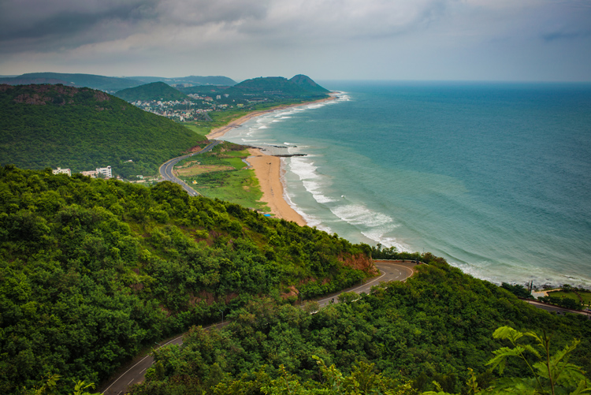Tirupati is one of the major cultural and religious pilgrimage spots in India. The city is located at the southern part of Andhra Pradesh and is situated at the foothills of the Eastern Ghats in the Chittor district. Although the major language spoken here is Telugu, the word Tirupati is a Tamil word as saint Ramanujacharya who was a Tamil Vaishnava saint was responsible for founding this city. The town is famous for its temple dedicated to ‘Balaji’, a form of Lord Vishnu. The temple’s foundation history is unknown and it was expanded over the centuries by various kingdoms and dynasties including the Chola, Pallava and the Vijaynagar Empire. The temple is one of the major pilgrimage spots in India and especially in the southern India
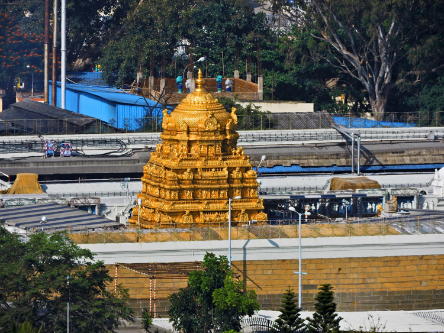Vijayawada, being the third largest city of Andhra Pradesh is number 3 on this list. The city is an agriculturally rich state and has been recognized as the Global city of the future by McKinsey. The former name of the city was Bezawada and has been under the rule of various ancient kingdoms of the South and has been one of the places the Chinese pilgrim Hieun Tsang stayed at. The River Krishna runs through the city and is located at the hills of the Eastern Ghats. The city’s location is unique as well as to its west lies the deep jungles of the Kondapalli Reserve Forests which is known to house leopards, jackals, wolves, wild boar and wild dogs. The city itself is a cultural and religious center with its various temples, religious monuments, rivers, ancient caves and many more.
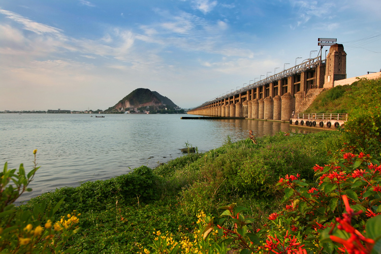The name ‘Nellore’ literally means ‘Paddy Place’ and is thus one of the primary agricultural cities in Andhra Pradesh. The vast paddy fields of Damaramadugu are one of the prime sources of rice in the state and in the country. The town is split in two by the Pennar River and is thus located at both the banks of the river. Towards the east of the city is the Bay of Bengal and thus Nellore is at a unique and strategic geographical location. The city has seen various ancient dynasties like the Mauryas, Chola, Pallava and Vijaynagar etc. Nellore is also famous for its ancient temples which are amazing owing to their stunning architecture and the cultural history associated with them. Nellore also has the Nelapattu bird sanctuary which is a great spot for the photography enthusiasts and professionals alike.
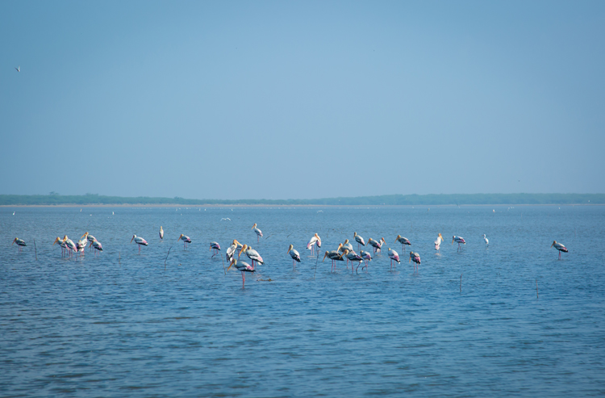The city of Chittoor lies at the banks of the Ponnai River and is thus an important agricultural town in Andhra Pradesh. The town’s major source of economy is its crops and agricultural products like grain, sugarcane, mango and Peanuts. The town has a unique climate which is high in the Eastern areas and low in the western areas because of the change in the altitude. The place is considered to be a backward district as far as the economy is concerned; nevertheless it is a great place to visit and an undiscovered gem for a tourist. The town with its various hills, rivers, temples, forts and a rich collection of flora and fauna is a must visit.
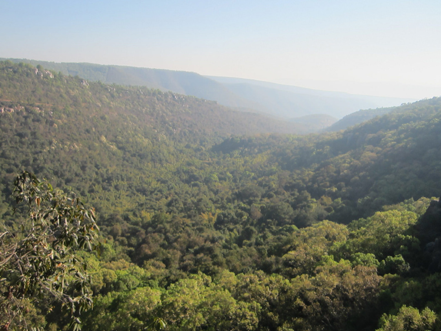The Largest of all the districts in Andhra Pradesh, Anantapur is famous for diamond mining and agricultural produce like rice, cotton, maize, chillies etc. The town is located near the bordering State of Karnataka and has 6 rivers that flow through the district. The town is an undiscovered tourist location with a number of monuments that exemplify the ancient reign of the Vijaynagar Kingdom and is famous for its ancient temples as well. The old ruins of the hilltop forts, its hidden waterfalls make it an amazing tourist attraction. The town of Anantapur is also famous for housing the mighty banyan tree of ‘Thimmamma Marrimanu’ which is one of the largest trees in the world. Its branches are spread in an area covering around 2.5 acres and a canopy that is spread around 19,107 sq meters. Anantapur is a definitive visit for all people visiting Andhra Pradesh.
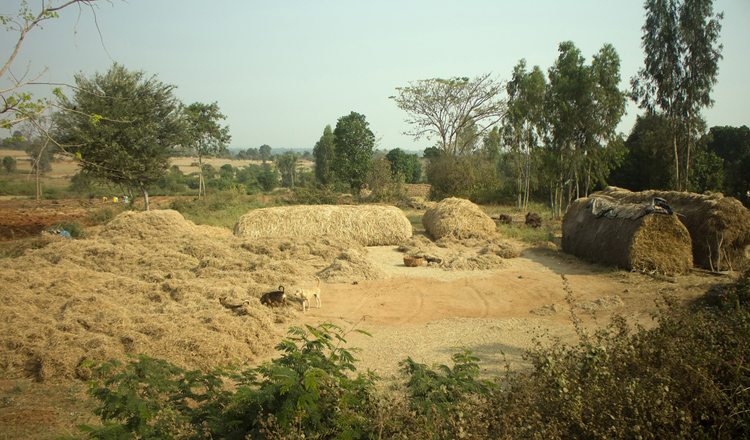Kurnool is known for being the erstwhile capital of the State of Andhra Pradesh. The town is one of the oldest cities and based on the rock paintings of Ketavaram, the town has seen humans since the Paleolithic era. The ancient caves and fort ruins in Kurnool date back pretty far in history and are a marvel to behold. The town is surrounded by the parallel running mountain ranges from north to south. The various temples and pilgrimage sites in this ancient town are not only significant when it comes to their cultural history but are also important architectural heritage of the city. The Rollapadu Bird Sanctuary is one of the prime reasons one must visit this town as it is a great place for both nature lovers and the shutterbugs.
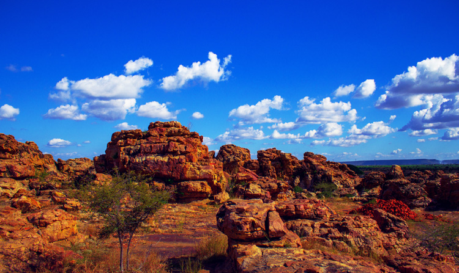Kadapa literally means a ‘Gateway’. This name owes to its special location which acts as a gateway to the pilgrim spot of the Tirumala Hills. The town was a part of the various ancient kingdoms of the South and it’s famous for its various temples and forts that exemplify a marvelous Dravidian style architecture and prowess of the artisans when it comes to stone carving. The Bellum Caves are few of the longest caves in the Indian subcontinent and a spot that one shouldn’t miss. The town got its economic boom when the large deposits of natural Uranium were discovered here and is one of the world’s top 20 reserves of the nuclear fuel. The Shree Venkateswara Wildlife Sanctuary located here is also a great spot worth visiting and is rich with flora, fauna and some breathtaking views
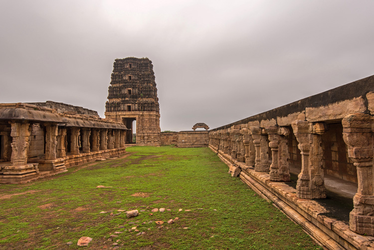Located on the banks of the Swarnamukhi River, Srikalahasti is located near the pilgrim city of Tirupati. The name of the town comes from the native names of three animals (spider, snake and elephant) which are said to have received salvation owing to their worship of Lord Shiva. Many different spots of this sacred town have been mentioned in the ancient texts and epics like Mahabharata. The town being a holy spot for the Hindu pilgrims boasts of its various temples which are architectural marvels and are located in few of the most picturesque locations between the surrounding hillocks. The town’s major sources of economy are agriculture and tourism so the visitors can expect good food and hospitality.
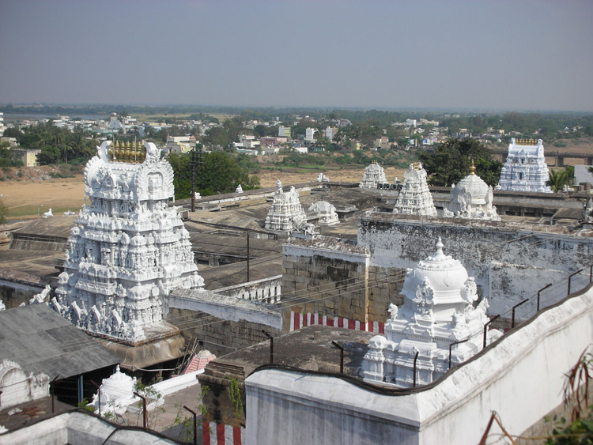Ongole is an ancient town that came under the reign of the ancient southern Indian kingdoms like Mauryas and Sathavahanas and the Pallava Ruler Krishna Deva Raya. Due to this ancient history behind the town’s origin, it is famous for its Hindu temples which date back to the 17th century. The town’s major produce is tobacco and is famous for its various small scale industries. Ongole is famous for its small beaches which are often devoid of huge crowds and has various water sport facilities. The sands are grainy and golden and the waters are clean. The hidden waterfalls of Bhairavakona are also not to be missed and you’re sure to get lost in the breathtaking and relaxing surroundings.
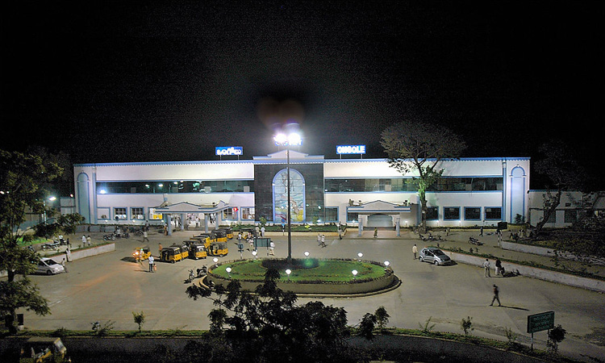The significance of Puttaparthi rose to fame due to it being one of the major religious centers of ‘Sathya Sai Baba’. The various temples and socio cultural centers in the town attracted a majority of the tourist population and pilgrims. The town houses a no. of religious sites and temples popularized by Satya Sai. The Chitravathi River is also referred as being the new Ganges and was used a cleansing spot for the pilgrims who visit here. One of the most distinctive places to visit here would be the Chaitanya Jyoti Museum which is a modern architectural marvel. The museum combines a mix of Chinese, Thai, Japanese and Gothic style architecture into a single monument. The Sathya Sai Space Theater and planetarium is also worth visiting.
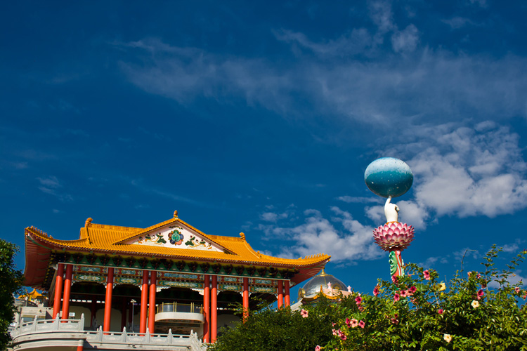The city is known to be the cultural capital of Andhra Pradesh and is notable for its ancient Vedic culture. The city was said to have been founded by the Chalukyas in the 11th century. However it has been disputed by many historians and archeologists who claim that the town existed before the rule of the Chalukyas. Rajahmundry is also known to be the birthplace of the Telugu language. The river Godavari is the major attraction in this town and various parks and ghats are located by its banks. The boat cruises on the river are also an activity that shouldn’t be missed. The town being an ancient one is also famous for its ancient Dravidian Hindu temples that are frequented by tourists from all around.

A small town which is mainly known for its agricultural produce of coconuts and rice, Amalapuram has a rich Vedic culture and is known for its various temples. While there isn’t much to see in this town the main places to visit are the Appanapalli Temple, Ainavilli Siddhi Vinayaka Temple and Sree Veereswara Swamy Temple. The town also lies at the head of the Konaseema Delta which is formed by the Godavari River. The town is also a hub of financial and education institutes in the Konaseema region.
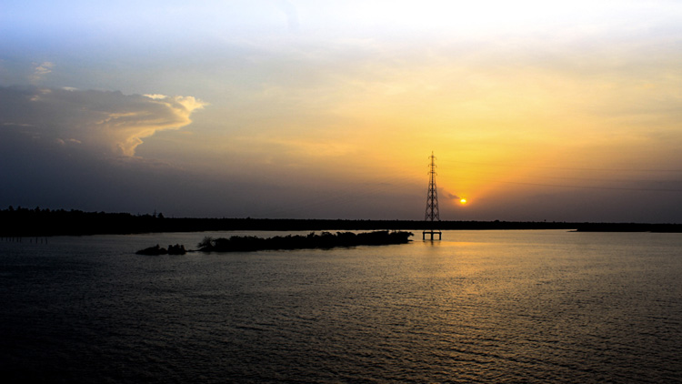The town of Srikakulam is located at the banks of the Krishna River and is placed on the northeast corner of Andhra Pradesh. This town came under the kalinga region of ancient India and is known for its various ancient temples. The town has one of the longest coastlines in the state of Andhra Pradesh and its various beaches are also worth visiting. Srikakulam is also a major producer of Khadi products. The various historic temples, monuments and beaches are deserving of a definitive visit.
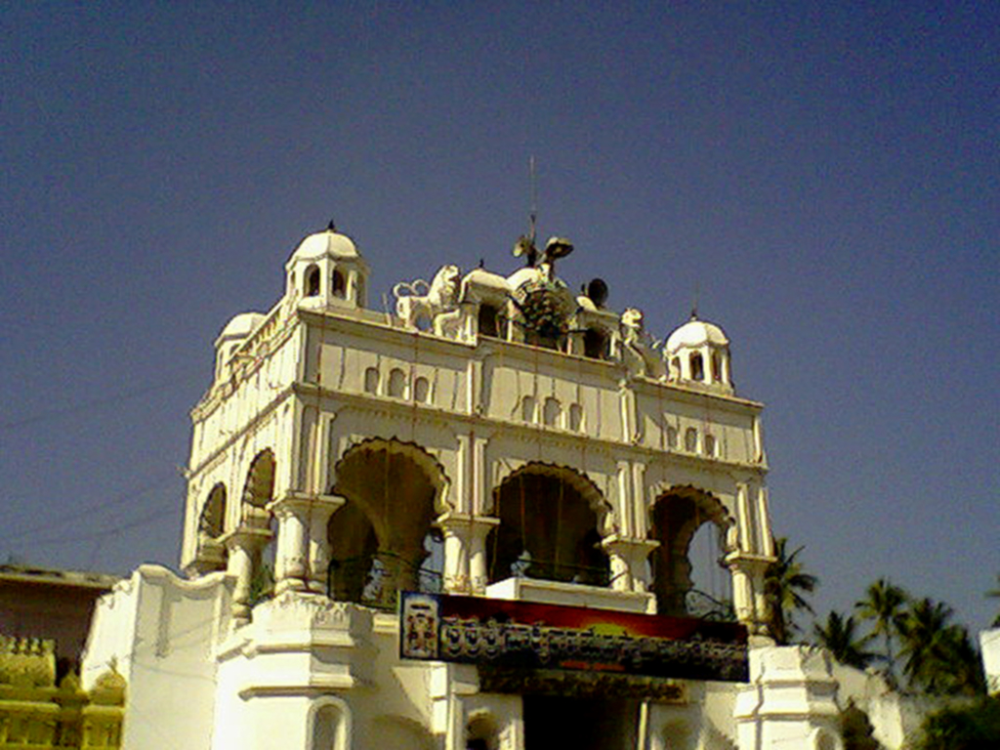